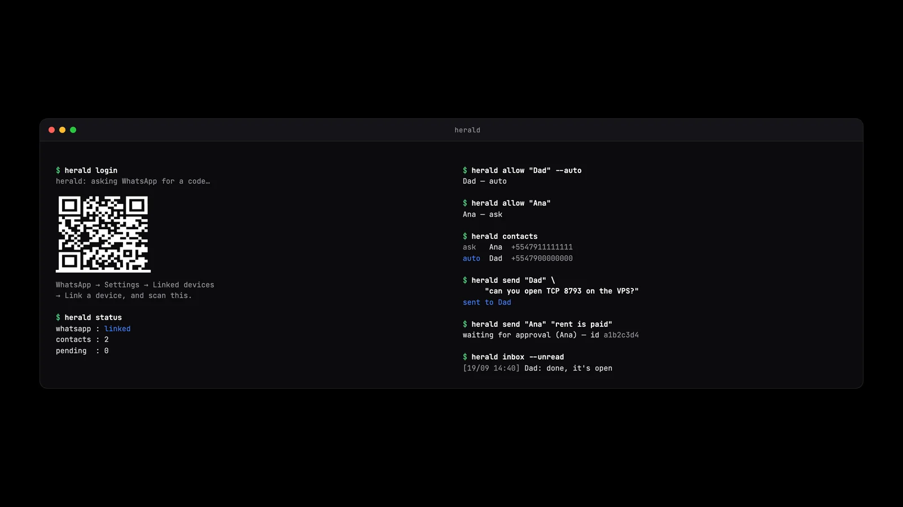

Herald
Dá voz a um agente de IA no seu WhatsApp, pela linha de comando e dentro de regras que você escreve.
Gives an AI agent a voice on your WhatsApp, from the command line and under rules you write.
Um agente trabalhando na sua máquina às vezes precisa de algo que só uma pessoa dá — uma porta aberta num servidor, uma permissão, uma resposta. Até aqui o único jeito de perguntar era dirigir o celular por automação de tela: lento, visível, e impossível enquanto você usa o computador.
An agent working on your machine sometimes needs something only a person can give — a port opened on a server, a permission, an answer. Until now the only way to ask was driving your phone through screen automation: slow, visible, and impossible while you are using the computer.
$ herald send "Pai" "consegue abrir a porta 8793 na VPS?" sent to Pai
$ herald send "Dad" "can you open TCP 8793 on the VPS?" sent to Dad
Não tem janela. Você liga o WhatsApp uma vez, lendo um QR code que o próprio
herald login abre na sua tela, e daí em diante o agente fala com as pessoas
pela linha de comando.
There is no window. You link WhatsApp once, by scanning a QR code that
herald login opens on your screen, and after that the agent talks to people
through the command line.

Dois jeitos de usar
Two ways to run it
$ herald mode list # o padrão: só quem você listou $ herald mode ask # qualquer contato seu, e você aprova cada mensagem
$ herald mode list # the default: only people you listed $ herald mode ask # anyone in your contacts, and you approve every message
O list é para configurar alguém uma vez e esquecer: seu pai em
auto, e o agente pede uma porta a ele sem envolver você. O ask é
para não configurar ninguém — o agente alcança qualquer pessoa salva no seu telefone, e
toda mensagem espera você aprovar, inclusive para contatos marcados como
auto. Modo com exceção escondida não é trava, então este não tem nenhuma. Quem
você pôs em off continua recusado nos dois.
list is for setting somebody up once and forgetting about it: your father on
auto, and the agent asks him for a port without involving you. ask
is for not setting anybody up — the agent can reach anyone saved in your phone, and
every single message waits for your approval, including messages to
contacts you marked auto. A mode with a hidden exception is not a guard, so
this one has none. A contact you set to off is refused in either.
O que mantém isso seguro
What keeps this safe
Emprestar uma conta de WhatsApp é emprestar uma voz que as outras pessoas vão ler como sua. Cinco regras, todas num módulo só e sem entrada nem saída para poderem ser testadas, é o que torna isso suportável:
Handing an agent a WhatsApp account is handing it a voice that other people will read as yours. Five rules, all in one I/O-free module so they can be tested, are what make that survivable:
| Lista de permissão |
Ninguém é alcançável até você adicionar — ou até você trocar para o modo
ask, em que você aprova cada mensagem no lugar de manter lista.
|
Allow-list |
Nobody is reachable until you add them — or until you switch to ask mode,
where you approve every message instead of keeping a list.
|
| Um modo por pessoa |
auto sai na hora. ask espera você aprovar. Contato adicionado
sem bandeira nenhuma nasce em ask.
|
A mode per person |
auto goes out immediately. ask waits for you to approve it. A
contact added without a flag is ask.
|
| Grupo nunca | Não importa o modo. | Never groups | Whatever the mode says. |
| Teto por hora |
12 mensagens por hora por pessoa, auto incluído, para um laço no agente não
virar quarenta mensagens para o pai de alguém.
|
Rate limit |
12 messages per hour per person, auto included, so a loop in the agent
cannot become forty messages to somebody's father.
|
| Ler só quem está na lista | Mensagem de qualquer outra pessoa é descartada antes de ser guardada. O resto do seu WhatsApp não passa pelo Herald. | Reading is scoped to the same list | Messages from anyone else are dropped before they are stored. The rest of your WhatsApp never passes through Herald. |
Duas assinaturas
Two signatures
Toda mensagem que o agente manda termina com uma linha visível dizendo que quem escreveu foi um assistente. Quem responde uma pergunta sobre servidor às onze da noite merece saber com o que está falando. Você escolhe o texto — não se ele aparece:
Every message the agent sends ends with a visible line saying it was written by an assistant. Somebody answering a question about a server at eleven at night deserves to know what they are talking to. You choose the wording — not whether it appears:
$ herald identity "IA do Miguel" consegue abrir a porta 8793 na VPS? — IA do Miguel
$ herald identity "Miguel's AI" can you open TCP 8793 on the VPS? — Miguel's AI
E com dois caracteres invisíveis (U+3164). Eles não desenham nada, o Unicode os trata como letras — então cortar espaço nunca os come — e são o que separa a sua escrita da escrita do agente numa conversa em que as duas chegam pelo mesmo número, meses depois.
And with two invisible characters (U+3164). They render as nothing, Unicode treats them as letters so trimming never eats them, and they are what tells your own writing apart from the agent's in a thread where both arrive from the same number, months later.
Começar
Getting started
$ git clone https://github.com/NspxMiguel/Herald.git $ cd Herald && bun install $ herald login # abre o QR como imagem $ herald allow "Pai" --auto # ou: herald mode ask
$ git clone https://github.com/NspxMiguel/Herald.git $ cd Herald && bun install $ herald login # opens the QR as a picture $ herald allow "Dad" --auto # or: herald mode ask
Herald usa o Chrome que já está na máquina — não baixa navegador nenhum. Também roda como servidor MCP, para o agente chegar nele sem passar pelo shell. Código e documentação no GitHub.
Herald drives the Chrome already on your machine — it does not download a browser. It also runs as an MCP server, so the agent can reach it without shelling out. Code and documentation on GitHub.